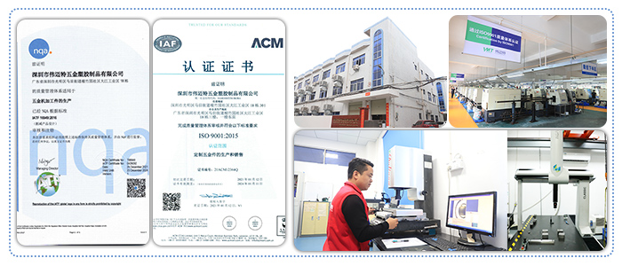
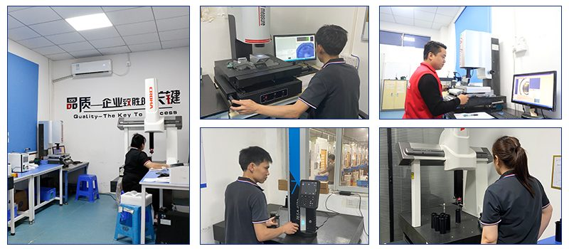

光学追踪仪，顾名思义，是一种利用光学原理进行精准跟踪和测量的高端仪器。它广泛应用于航天、医疗、工程测量、虚拟现实等多个领域，尤其在精密测量和姿态控制等方面具有极高的应用价值。光学追踪仪的核心零件如光学镜头、传感器以及外壳等，都需要极高的精度和稳定性。而这种高精度的零件制造，恰恰离不开CNC加工技术的支持。
CNC加工，或计算机数控加工，是一种通过计算机程序控制的自动化加工技术，它能精确地制造出符合设计要求的零件。对于光学追踪仪这类对精度要求极高的设备，CNC加工技术能够提供无可比拟的优势：
超高精度： 在光学追踪仪的核心零件制造过程中，零件的尺寸公差往往只有微米级别。CNC加工技术通过数控系统的精密控制，能够确保零件的加工精度远超人工加工的极限。
高重复性： 对于光学追踪仪的零件加工，批量生产是常见的需求。CNC技术能够保证每一件零件的加工精度都高度一致，避免了人工操作带来的误差，提升了生产效率和产品的一致性。
复杂形状加工： 光学追踪仪的零件常常具有复杂的几何形状和细致的表面结构。CNC加工技术能轻松处理这些复杂的设计，确保零件的每一个细节都能精准还原。

为了让大家更直观地理解CNC加工如何在光学追踪仪的制造中发挥作用，我们来看几个实际案例。
光学镜头外壳的精密加工： 光学镜头外壳需要具备极高的稳定性，以确保光线通过时不受到任何不必要的干扰。通过CNC加工，我们可以精确控制外壳的内外尺寸，同时保证其表面光洁度，确保成品的高光学性能。
传感器支架的精细加工： 光学追踪仪中的传感器通常需要固定在一个非常稳定且精确的位置，这就要求传感器支架必须有极高的加工精度。CNC加工技术能够精准地按照设计要求，快速制作出符合标准的支架，并保证每个支架的尺寸和公差都在允许范围内。
镜头对准孔的精密钻孔： 光学系统的精密度要求所有的零件必须保持完美的对准，以确保系统的准确测量。CNC加工能够高精度地完成对准孔的钻孔任务，保证孔位的偏差最小，从而为光学系统的高效运行提供坚实基础。
在光学追踪仪的制造过程中，通常会遇到一些质量控制上的难题，如交期紧张、质量不稳定、表面处理不良等。这些问题常常让许多光学追踪仪制造商头疼不已。幸运的是，CNC加工技术的优势恰好能够帮助我们解决这些问题。
缩短交期： 对于许多光学追踪仪制造商来说，交期是一个非常关键的因素。CNC加工技术的高效性使得我们能够在短时间内完成大量零件的加工，而且每一件零件的精度都能得到保证。这样一来，就能有效减少因加工不当导致的延迟问题，确保按时交货。
质量管控： CNC加工能够在每个生产环节中实现严格的质量控制。通过使用高精度的数控设备，不仅可以在生产过程中实时监控零件的质量，还能确保每一个细节都符合设计要求。因此，即使是复杂的光学追踪仪零件，也能保证质量稳定。
表面处理： 表面处理是光学追踪仪零件制造中的重要环节。CNC加工能够在零件的表面加工出光滑、均匀的表面，为后续的涂装和处理提供良好的基础。无论是光学镜头外壳的涂层还是其他部件的表面处理，CNC加工都能够提供精确的加工，避免了传统加工方式带来的不均匀现象。
完善售后服务： 由于CNC加工的高精度特性，制造商能够提供更好的售后服务。如果客户在使用过程中遇到任何问题，生产商可以依据原始的CAD设计文件重新制造零件，并确保其质量达到标准，从而大大提升客户的满意度和品牌的声誉。

对于需要定制光学追踪仪零件的公司来说，选择一个合适的CNC加工厂至关重要。以我在行业中的经验来看，选择CNC加工厂时，可以从以下几个方面入手：
技术能力： 加工厂的技术能力直接决定了零件的加工精度。选择具备高精度加工设备和技术的厂商，可以确保您的光学追踪仪零件满足严格的质量要求。
加工经验： 加工厂是否有为光学追踪仪、精密仪器等高端设备生产零件的经验，也是非常重要的因素。经验丰富的厂商能够更好地理解光学追踪仪的特殊需求，并能在加工过程中避免常见的错误。
交期和服务： 对于急需交付的项目，交期是一个不容忽视的因素。选择一个能够按时交付，并且有良好售后服务的厂商，将大大减少您的运营风险。
质量控制体系： 优秀的CNC加工厂通常会有完善的质量控制体系，能够确保每个零件的质量都符合要求。建议选择那些拥有ISO认证或类似资质的厂商，这样能够最大程度保障零件的加工质量。
CNC加工技术作为一种高度精密的制造技术，在光学追踪仪的高性能零件制造中起着至关重要的作用。从精度控制到批量生产，从复杂形状的加工到表面处理的精细化，CNC加工技术不仅能够有效解决光学追踪仪制造中的技术难题，还能够大大提升产品质量和生产效率。作为一名长期从事CNC加工领域的专业人士，我深知，选择合适的CNC加工厂和技术人员，对光学追踪仪的制造至关重要。如果您正在寻找高质量的光学追踪仪零件制造解决方案，不妨考虑与经验丰富的CNC加工厂合作，确保您的产品在竞争激烈的市场中脱颖而出。

 全国服务热线
全国服务热线